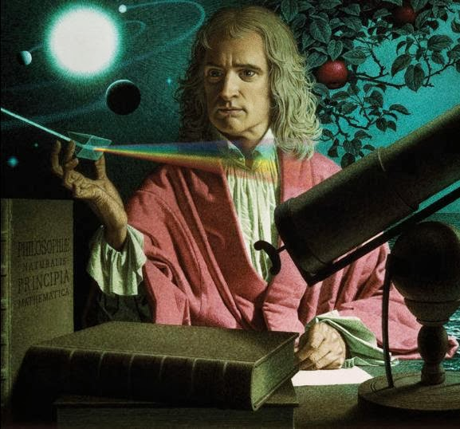
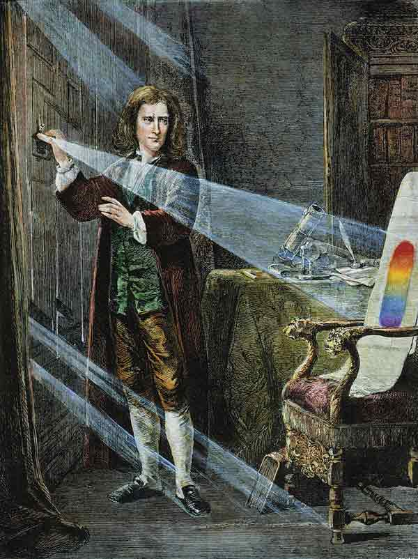
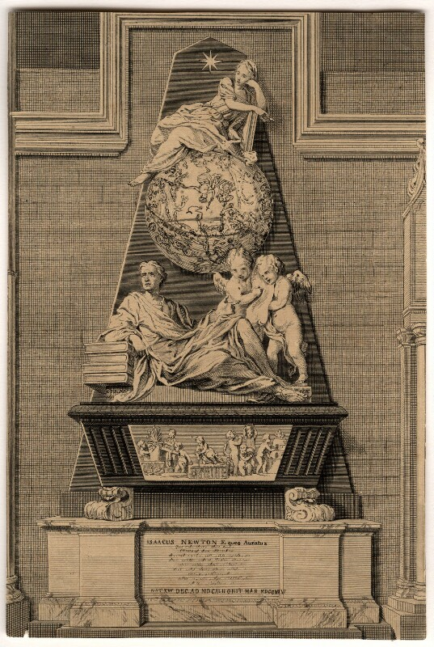
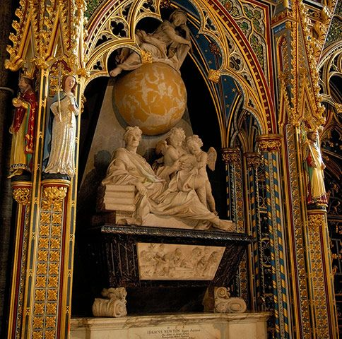

Isaac Newton
ไอแซก นิวตัน เกิดเมื่อวันที่ 4 มกราคม ค.ศ.1643 (หรือ 25 ธันวาคม ค.ศ. 1642 ตามปฏิทินเก่า) ที่วูลส์ธอร์พแมนเนอร์
ท้องถิ่นชนบทแห่งหนึ่งในลินคอล์นเชียร์ ตอนที่นิวตันเกิดนั้นประเทศอังกฤษยังไม่ยอมรับปฏิทินเกรกอเรียน
ดังนั้นวันเกิดของเขาจึงบันทึกเอาไว้ว่าเป็นวันที่ 25 ธันวาคม 1642 บิดาของนิวตัน (ชื่อเดียวกัน)
ซึ่งเป็นชาวนาผู้มั่งคั่งเสียชีวิตก่อนเขาเกิด 3 เดือน เมื่อแรกเกิดนิวตันตัวเล็กมาก
เขาเป็นทารกคลอดก่อนกำหนดที่ไม่มีผู้ใดคาดว่าจะรอดชีวิตได้
มารดาของเขาคือ นางฮานนาห์ อายสคัฟ บอกว่าเอานิวตันใส่ในเหยือกควอร์ทยังได้ (ขนาดประมาณ 1.1 ลิตร)
เมื่อนิวตันอายุได้ 3 ขวบ มารดาของเขาแต่งงานใหม่กับสาธุคุณบาร์นาบัส สมิธ และได้ทิ้งนิวตันไว้ให้ มาร์เกรี อายส์คัฟ
ยายของนิวตันเลี้ยงและนิวตันไม่ชอบพ่อเลี้ยง และเป็นอริกับมารดาไปด้วยฐานแต่งงานกับเขา
ความรู้สึกนี้ปรากฏในงานเขียนสารภาพบาปที่เขาเขียนเมื่ออายุ 19: "ขอให้พ่อกับแม่สมิธรวมทั้งบ้านของพวกเขาถูกไฟผลาญ"
นิวตันเคยหมั้นครั้งหนึ่งในช่วงปลายวัยรุ่น
แต่เขาไม่เคยแต่งงานเลย เพราะอุทิศเวลาทั้งหมดให้กับการศึกษาและการทำงาน นับแต่อายุ 12 จนถึง 17
นิวตันเข้าเรียนที่คิงส์สกูล แกรนแธม
(มีลายเซ็นที่เชื่อว่าเป็นของเขาปรากฏอยู่บนหน้าต่างห้องสมุดโรงเรียนจนถึงทุกวันนี้) ต่อมาในเดือนตุลาคม ค.ศ.1659
เขากลับไปบ้านเกิดเมื่อมารดาที่เป็นหม้ายครั้งที่ 2 พยายามบังคับให้เขาเป็นชาวนา แต่เขาเกลียดการทำนา
ครูใหญ่ที่คิงส์สกูล เฮนรี สโตกส์ พยายามโน้มน้าวให้มารดาของเขายอมส่งเขากลับมาเรียนให้จบ
จากแรงผลักดันในการแก้แค้นครั้งนี้ นิวตันจึงเป็นนักเรียนที่มีผลการเรียนสูงที่สุด
เดือนมิถุนายน ค.ศ.1661 นิวตันได้เข้าเรียนที่วิทยาลัยทรินิตี้ เคมบริดจ์ ในฐานะซิซาร์ (sizar
คือทุนชนิดหนึ่งซึ่งนักศึกษาต้องทำงานเพื่อแลกกับที่พัก อาหาร และค่าธรรมเนียม)
ในยุคนั้นการเรียนการสอนในวิทยาลัยตั้งอยู่บนพื้นบานแนวคิดของอริสโตเติล
แต่นิวตันชอบศึกษาแนวคิดของนักปรัชญายุคใหม่คนอื่นๆ
ที่ทันสมัยกว่า เช่น เดส์การ์ตส์ และนักดาราศาสตร์ เช่น โคเปอร์นิคัส, กาลิเลโอ และเคปเลอร์ เป็นต้น ปี ค.ศ.1665
เขาค้นพบทฤษฎีบททวินามและเริ่มพัฒนาทฤษฎีทางคณิตศาสตร์ซึ่งต่อมากลายเป็นแคลคูลัสกณิกนันต์
นิวตันได้รับปริญญาในเดือนสิงหาคม ค.ศ.1665 หลังจากนั้นไม่นาน มหาวิทยาลัยต้องปิดลงชั่วคราว
เนื่องจากเกิดโรคระบาดครั้งใหญ่ แม้เมื่อศึกษาในเคมบริดจ์เขาจะไม่มีอะไรโดดเด่น
แต่การศึกษาด้วยตนเองที่บ้านในวูลส์ธอร์พตลอดช่วง 2 ปีต่อมาได้สร้างพัฒนาการแก่ทฤษฎีเกี่ยวกับแคลคูลัส
ธรรมชาติของแสงสว่าง และกฎแรงโน้มถ่วงของเขาอย่างมาก
นิวตันได้ทำการทดลองเกี่ยวกับแสงอาทิตย์อย่างหลากหลายด้วยแท่งแก้วปริซึมและสรุปว่ารังสีต่างๆ
ของแสงซึ่งนอกจากจะมีสีแตกต่างกันแล้วยังมีภาวะการหักเหต่างกันด้วย
การค้นพบที่เป็นการอธิบายว่าเหตุที่ภาพที่เห็นภายในกล้องโทรทรรศน์ที่ใช้เลนส์แก้วไม่ชัดเจน
ก็เนื่องมาจากมุมในการหักเหของลำแสงที่ผ่านแก้วเลนส์แตกต่างกัน
ทำให้ระยะโฟกัสต่างกันด้วย จึงเป็นไม่ได้ที่จะได้ภาพที่ชัดด้วยเลนส์แก้ว
การค้นพบนี้กลายเป็นพื้นฐานในการพัฒนากล้องโทรทรรศน์แบบกระจกเงาสะท้อนแสงที่สมบูรณ์โดยวิลเลียม เฮอร์เชล และ
เอิร์ลแห่งโรส ในเวลาต่อมา ในเวลาเดียวกับการทดลองเรื่องแสงสว่าง
นิวตันก็ได้เริ่มงานเกี่ยวกับแนวคิดในเรื่องการโคจรของดาวเคราะห์


ชีวิตในการทำงาน
การหล่นของผลแอปเปิลทำให้เกิดคำถามอยู่ในใจของนิวตันว่าแรงของโลกที่ทำให้ผลแอปเปิลหล่นน่าจะเป็นแรงเดียวกันกับแรงที่
“ดึง” ดวงจันทร์เอาไว้ไม่ไปที่อื่นและทำให้เกิดโคจรรอบโลกเป็นวงรี
ผลการคำนวณเป็นสิ่งยืนยันความคิดนี้แต่ก็ยังไม่แน่ชัดจนกระทั่งการการเขียนจดหมายโต้ตอบระหว่างนิวตันและโรเบิร์ต
ฮุก
ที่ทำให้นิวตันมีความมั่นใจและยืนยันหลักการกลศาสตร์เกี่ยวกับการเคลื่อนที่ได้เต็มที่ ในปีเดียวกันนั้น
เอ็ดมันด์ ฮัลเลย์ได้มาเยี่ยมนิวตันเพื่อถกเถียงเกี่ยวกับคำถามเรื่องดาวเคราะห์
ฮัลลเลย์ต้องประหลาดใจที่นิวตันกล่าวว่าแรงกระทำระหว่างดวงอาทิตย์กับดาวเคราะห์ที่ทำให้การวงโคจรรูปวงรีได้นั้นเป็นไปตามกฎกำลังสองที่นิวตันได้พิสูจน์ไว้แล้วนั่นเอง
ซึ่งนิวตันได้ส่งเอกสารในเรื่องนี้ไปให้ฮัลเลย์ดูในภายหลังและฮัลเลย์ก็ได้ชักชวนขอให้นิวตันเขียนหนังสือเล่มนี้ขึ้น
และหลังการเป็นศัตรูคู่ปรปักษ์ระหว่างนิวตันและฮุกมาเป็นเวลานานเกี่ยวกับการอ้างสิทธิ์ในการเป็นผู้ค้นพบ
“กฎกำลังสอง” แห่งการดึงดูด
หนังสือเรื่อง "หลักการคณิตศาสตร์ว่าด้วยปรัชญาธรรมชาติ” (Philosophiae naturalist principia mathematica หรือ
The Mathematical Principles of Natural Philosophy) ก็ได้รับการตีพิมพ์
เนื้อหาในเล่มอธิบายเรื่องความโน้มถ่วงสากล
และเป็นการวางรากฐานของกลศาสตร์ดั้งเดิม (กลศาสตร์คลาสสิก) ผ่านกฎการเคลื่อนที่ ซึ่งนิวตันตั้งขึ้น นอกจากนี้
นิวตันยังมีชื่อเสียงร่วมกับ กอทท์ฟรีด วิลเฮล์ม ไลบ์นิซ ในฐานะที่ต่างเป็นผู้พัฒนาแคลคูลัสเชิงอนุพันธ์อีกด้วย
งานสำคัญชิ้นนี้ซึ่งถูกหยุดไม่ได้พิมพ์อยู่หลายปีได้ทำให้นิวตันได้รับการยอมรับว่าเป็นนักฟิสิกส์กายภาพที่ยิ่งใหญ่ที่สุด
ผลกระทบมีสูงมาก นิวตันได้เปลี่ยนโฉมวิทยาศาสตร์ว่าด้วยการเคลื่อนที่ของเทห์วัตถุที่มีมาแต่เดิมโดยสิ้นเชิง
นิวตันได้ทำให้งานที่เริ่มมาตั้งแต่สมัยกลางและได้รับการเสริมต่อโดยความพยายามของกาลิเลโอเป็นผลสำเร็จลง และ
“กฎการเคลื่อนที่” นี้ได้กลายเป็นพื้นฐานของงานสำคัญทั้งหมดในสมัยต่อๆ มา
ชีวิตในครอบครัว
นิวตันไม่เคยแต่งงาน และไม่มีหลักฐานใดที่บ่งบอกว่าเขาเคยมีความสัมพันธ์เชิงชู้สาวกับผู้ใด[ต้องการอ้างอิง]
แม้จะไม่สามารถระบุได้แน่ชัด แต่ก็เชื่อกันโดยทั่วไปว่าเขาถึงแก่กรรมไปโดยที่ยังบริสุทธิ์
ดังที่บุคคลสำคัญหลายคนกล่าวถึง เช่นนักคณิตศาสตร์ ชาลส์ ฮัตตัน นักเศรษฐศาสตร์ จอห์น เมย์นาร์ด เคนส์
และนักฟิสิกส์ คาร์ล เซแกน
วอลแตร์ นักเขียนและนักปรัชญาชาวฝรั่งเศสซึ่งพำนักในลอนดอนในช่วงเวลาที่ฝังศพของนิวตัน
อ้างว่าเขาได้ค้นพบข้อเท็จจริงนี้ เขาเขียนไว้ว่า
"ผมได้รับการยืนยันจากหมอและศัลยแพทย์ที่อยู๋กับเขาตอนที่เขาตาย" (เรื่องที่อ้างกล่าวว่า
ขณะที่เขานอนบนเตียงและกำลังจะตาย ก็สารภาพออกมาว่าเขายังบริสุทธิ์อยู่)
ในปี 1733 วอลแตร์ระบุโดยเปิดเผยว่านิวตัน "ไม่มีทั้งความหลงใหลหรือความอ่อนแอ เขาไม่เคยเข้าใกล้หญิงใดเลย"
นิวตันมีมิตรภาพอันสนิทสนมกับนักคณิตศาสตร์ชาวสวิส Nicolas Fatio de Duillier ซึ่งเขาพบในลอนดอนราวปี 1690
แต่มิตรภาพนี้กลับสิ้นสุดลงเสียเฉยๆ ในปี 1693 จดหมายติดต่อระหว่างคนทั้งคู่บางส่วนยังคงเหลือรอดมาถึงปัจจุบัน



บั้นปลายของชีวิต
ชีวิตส่วนใหญ่ของนิวตันอยู่กับความขัดแย้งกับบรรดานักวิทยาศาสตร์คนอื่นๆ โดยเฉพาะฮุก, ไลบ์นิซ และเฟลมสตีด
ซึ่งนิวตันแก้เผ็ดโดยวิธีลบเรื่องหรือข้อความที่เป็นจิตนาการหรือไม่ค่อยเป็นจริงที่ได้อ้างอิงว่าเป็นการช่วยเหลือของพวกเหล่านั้นออกจากงานของนิวตันเอง
นิวตันตอบโต้การวิพากษ์วิจารณ์งานของตนอย่างดุเดือดเสมอ
และมักมีความปริวิตกอยู่เป็นนิจจนเชื่อกันว่าเกิดจากการถูกมารดาทอดทิ้งในสมัยที่เป็นเด็ก
และความบ้าคลั่งดังกล่าวแสดงนี้มีให้เห็นตลอดการมีชีวิต อาการสติแตกของนิวตันในปี ค.ศ.1693
ถือเป็นการป่าวประกาศยุติการทำงานด้านวิทยาศาสตร์ของนิวตัน
หลังได้รับพระราชทานบรรดาศักดิ์เป็นขุนนางระดับเซอร์ในปี ค.ศ.1705
นิวตันใช้ชีวิตในบั้นปลายภายใต้การดูแลของหลานสาว นิวตันไม่ได้แต่งงาน
แต่ก็มีความสุขเป็นอย่างมากในการอุปการะนักวิทยาศาสตร์รุ่นหลัง ๆ และนับตั้งแต่ปี ค.ศ.1703
เป็นต้นมาจนถึงวาระสุดท้ายแห่งชีวิต นิวตันดำรงตำแหน่งเป็นนายกราชสมาคมแห่งลอนดอนที่ได้รับสมญา
“นายกสภาผู้กดขี่”
เมื่อนิวตันเสียชีวิตลง พิธีศพของเขาจัดอย่างยิ่งใหญ่เทียบเท่ากษัตริย์
ศพของเขาฝังอยู่ที่มหาวิหารเวสต์มินสเตอร์ เช่นเดียวกับกษัตริย์และพระบรมวงศานุวงศ์ชั้นสูงของอังกฤษ
นักคณิตศาสตร์ชาวฝรั่งเศส โฌแซ็ฟ-หลุยส์ ลากร็องฌ์ มักพูดบ่อยๆ
ว่านิวตันเป็นอัจฉริยะที่ยิ่งใหญ่ที่สุดที่เคยมีมา มีอยู่ครั้งหนึ่งเขากล่าวว่า นิวตันนั้น "โชคดีที่สุด
เพราะเราไม่อาจค้นพบระบบของโลกได้มากกว่า 1 ครั้ง" กวีชาวอังกฤษ อเล็กซานเดอร์ โพพ
ได้รับแรงบันดาลใจจากความสำเร็จของนิวตัน และเขียนบทกวีที่โด่งดังมาก ดังนี้:
Nature and nature's laws lay hid in night;
God said "Let Newton be" and there was light.
ธรรมชาติและกฎแห่งธรรมชาติซ่อนตัวอยู่ในรัตติกาล
พระเจ้าตรัสว่า "ให้นิวตันกำเนิด" แสงสว่างจึงได้มีขึ้น
แม้โดยทางบุคลิกภาพแล้ว นิวตันจะไม่ใช่คนถ่อมตัวนัก
แต่นิวตันก็มีมารยาทพอที่จะถ่อมตัวกับความสำเร็จของตัวเอง ครั้งหนึ่งเขาเขียนจดหมายถึงโรเบิร์ต ฮุก
ในเดือนกุมภาพันธ์ พ.ศ.2219 ว่า:
If I have seen further it is by standing on the shoulders of giants.
ถ้าฉันสามารถมองได้ไกลกว่าผู้อื่น นั่นก็เพราะฉันยืนอยู่บนไหล่ของยักษ์